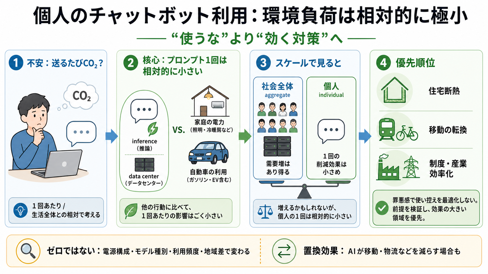

What's the carbon footprint of using ChatGPT or Gemini? ...
# What's the carbon footprint of using ChatGPT or Gemini? ### A new study from Google suggests its Gemini LLM uses aroun…

チャットボットの「プロンプト1回」が気候に与える負荷は、多くの人にとって優先度が低く、罪悪感で使い控えを最適化しない方が合理的です。 個人利用は“絶対ゼロ”ではないが、相対比較で小さい可能性が高い。
「プロンプトを送るたびにCO2が増えるのでは」という不安は自然ですが、評価には少なくとも (i) 1回あたり と (ii) 生活全体との相対 を分ける必要があります。
AIは学習（training）と推論（inference）で計算資源と電力を使い、データセンターの運用・冷却・水も関係します。 それでも「個人のプロンプト」単位では、負担は相対的に小さいはずだ、と整理されています。
AIの利用者が増えれば社会全体の需要は増えます。 しかしそのことは「個人の1回の利用が特別に重い」ことを自動的には意味しません。
節制が「気候対策の最適化」にならない可能性があり、行動を止めても削減量は小さくなりがちです。 これは“LEDを1個外す”のような低レバーの調整に近い、という比喩で説明されます。
データセンター由来の排出は「悪いコスト」で終わらず、 他の活動の置換（促進/抑制）を含めて評価が変わります。
データセンターは場所として大きく見えますが、負担は「利用者単位で分散」されます。 だからこそ、“インフラの小コストに固定”すると、対策の優先順位がずれる恐れがあります。
主張の中心は「完全にゼロだから安心」ではなく、 相対的に小さい可能性が高く、個人の節制が気候対策として最適になりにくい、という評価です。
本文だけでは前提（電源構成、モデル種別、待機時間、プロンプト数、地域差、置換行動の推定）が検証できません。 そのため「心配は不要」と一般化するなら、どの前提が成立する場合に言えるかが重要です。
個人のプロンプト使用を気候対策の最優先に置くのは、相対的に費用対効果が低くなりやすい。 ただし確からしさは前提依存なので、数値の前提を確認しつつ、削減インパクトの大きい領域へ注意を振り向けましょう。
# What's the carbon footprint of using ChatGPT or Gemini? ### A new study from Google suggests its Gemini LLM uses aroun…
# The Environmental Impact of ChatGPT: A Call for Sustainable Practices In AI Development. However, as with any large la…
## Science Acumen's post. ### **Science Acumen**. The AI boom in 2025 has triggered a significant surge in energy consum…
You are using a browser version with limited support for CSS. # A comparative study of AI and human programming on envir…
How Much Carbon Does AI Actually Use? *Every AI query has a carbon footprint. Behind every ChatGPT response, every AI-ge…